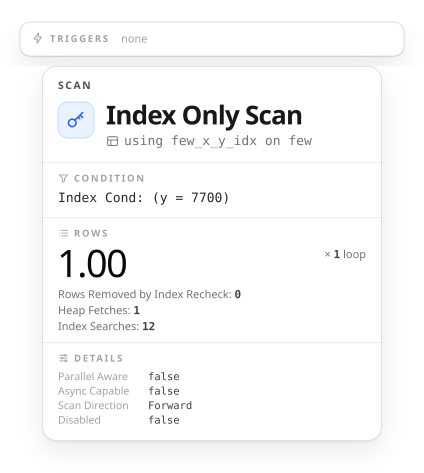
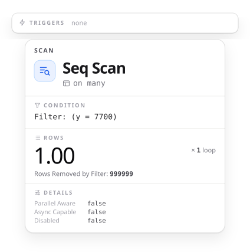

KDOC 657: PostgreSQL 18のスキップスキャンを試す
この文書のステータス
- 作成
- 2026-10-13 貴島
- レビュー
- 2026-10-13 貴島
概要
PostgreSQL 18 から、複数列の B-tree インデックスで、先頭の列に条件がないとき、先頭の列の値ごとにインデックスを探し直して、関係のない部分を読み飛ばせるようになった(スキップスキャン)。
たとえば、(x, y)に対するインデックスと問い合わせ条件WHERE y = 7700では、B-treeインデックススキャンでスキップスキャン最適化を適用できる場合があります。 これは通常、問い合わせプランナがそのテーブルで使用可能なインデックスを考慮した時に、WHERE x = N AND y = 7700の検索を、Nで取り得るすべての値（または実際にインデックスに格納されているすべてのxの値）に対して繰り返す方法が最速であると想定している場合に発生します。 この方法は通常、xの個別値が非常に少なく、ほとんどのインデックスをスキップしてスキャンする（ほとんどのリーフページには関連するタプルが含まれないため）とプランナが期待する場合にのみ採用されます。
同じ (x, y) のインデックスで、x の種類が 10 のテーブルと 10 万のテーブルを作り、WHERE y = 7700 の実行計画を比べる。
-- 出力を短くするため、並列実行を切る
SET max_parallel_workers_per_gather = 0;
CREATE TABLE few (x int, y int);
CREATE TABLE many (x int, y int);
INSERT INTO few
SELECT i % 10, i FROM generate_series(1, 1000000) i;
INSERT INTO many
SELECT i % 100000, i FROM generate_series(1, 1000000) i;
CREATE INDEX ON few (x, y);
CREATE INDEX ON many (x, y);
ANALYZE few;
ANALYZE many;
-- x が 10 種類
EXPLAIN (ANALYZE, FORMAT JSON, COSTS OFF, TIMING OFF,
SUMMARY OFF, BUFFERS OFF)
SELECT * FROM few WHERE y = 7700;
-- x が 10 万種類
EXPLAIN (ANALYZE, FORMAT JSON, COSTS OFF, TIMING OFF,
SUMMARY OFF, BUFFERS OFF)
SELECT * FROM many WHERE y = 7700;


- x が 10 種類のテーブルでは、WHERE に x の条件がないのに、(x, y) のインデックスで Index Only Scan になった。Index Searches は 12 である。 x の 10 種類の値ごとに近い値で、インデックスを探し直しているように見える
- インデックスが使われないこともある。x が 10 万種類のテーブルでは、インデックスを使わず Seq Scan になった。x の値が 10 万種類あると、探し直す回数が多すぎてインデックスのほぼ全体を読むことになるので、プランナは Seq Scan を選んだようである
xの個別値が多い場合、インデックス全体のスキャンが必要になる状況になりうるため、ほとんどの場合プランナはインデックスを使用するよりもシーケンシャルスキャンを好みます。
関連
抽象。
- 先頭の条件がなくても、取りうる値ごとに探し直せば索引を使える
- 探し直す回数が多すぎると、全体を順に読むほうが安くなり、索引は使われない
関連。
- 前提: KDOC 497: 複合インデックスの使用条件を試す。複合インデックスが使われるかは、条件に使う列の組み合わせで決まること
- 補足: KDOC 580: 複合インデックスの順番による差を見る。複合インデックスの列の順番が効率を左右すること